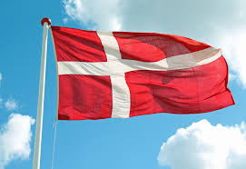

ICE Challenge #1: Prophet Card

For this challenge, we were tasked to recreate the Prophet Card of president Nelson using HTML and CSS. It was a tricky one to figure out, especially because it was the first ICE Challenge. I unfortunately wasn't able to complete the assignemnt before it was due, so my card is incomplete.
ICE Challenge #2: Apostle Spotlight

For the next challenge, we had to create a cool design board with the First Presidency, as well as each member of the Quorum of the Twelve Apostles. This required some skills with CSS Grid, and I had a lot of fun working till this one was finished. I even spiced it up by giving each image a gold border, as well as a larger size on "hover".
ICE Challenge #3: Favorite Devo Table

This project was fun because it involved the use of forms and tables in HTML/CSS. We were supposed to make a table displaying our favorite devotionals, and some information about them, as well as creating a form that asked the user to input their favorite devotional. Even though we don't have a destination set up to store the input from the user, it's still cool to see how one can poll users.
ICE Challenge #4: Holiday Page

I really enjoyed spending this day of class designing a Halloween themed page. It was cool to see everyone elses designs too! There was a lot of thought put into each design, and ChatGPT was able to help us all write some fancy code to add spooky effects to our websites.
ICE Challenge #5: Country Flags with Grid
This activity really helped my improve my skills in using grid. I really enjoyed looking up certain proportions to make each flag look correct, as well as finding the correct hexidecimal colors to accurately match the flags. This activity took me no time at all to finish, and I even went through a little extra effort to make one of the flags wave a little bit.
ICE Challenge #6: CSS Positioning Activity

For the 6th ICE Challenge, it was more practice using grid. By now, I feel pretty confident in my grid abilities, and was able to complete all 6 of the positioning exercises with ease, and with time to spare before class ended. There was 1 exercise where I had to research how to do it, but it was fairly easy. I really liked this activity and it built my skills and confidence using grid.
ICE Challenge #7: Image Gallery Issues

This ICE Challenge was interesting because we were set up originally with bad images for our website, being really large in file size. Our task was to reduce the file size of the images using PhotoShop or Photopea. It wasn't too difficult of a task, but took some time to go through each image, make it smaller in storage size, and then change the link in HTML.
ICE Challenge #8: Signup Form Design

For the final ICE Challenge, we implemented almost everything we've learned up until this point. We were given an example "Daily Scripture Signup page," and had to write the HTML and CSS to mirror that given page. It was really tricky in some parts, but after some effort put in, I was able to make a very similar looking Signup page, and was really happy with the use of my code writing skills.